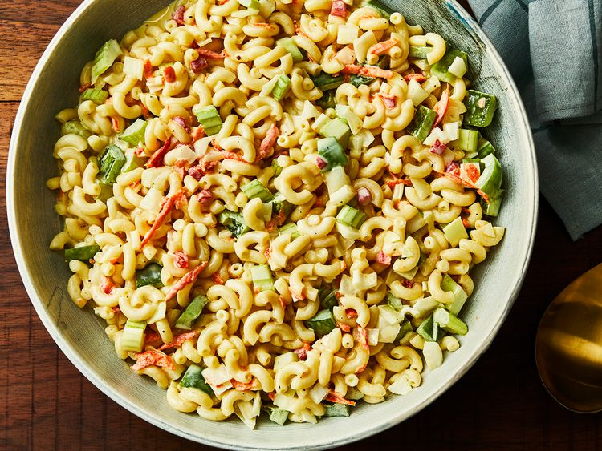

Home
Classic Macaroni Salad

Description
This creamy macaroni salad with celery,
onion, green pepper, carrot, and pimentos is
easy to make and is the perfect crowd-pleasing
dish to bring to your next picnic or potluck.
Ingredients:
- Macaroni: Of course, you'll need macaroni pasta!
- Condiments: A creamy blend of mayonnaise and yellow mustard adds tons of flavor.
- Sugar and vinegar: White sugar adds a dose of sweetness, which is
pleasantly balanced by white vinegar. You can, of course, add as much or as
little sugar to suit your taste.
- Seasonings: This macaroni salad is simply seasoned with salt and ground black pepper.
- Vegetables: You'll need celery, an onion, and a bell pepper. Grated carrots
and pimento peppers are optional, but they add welcome flavor and color.
Steps:
- Cook the macaroni in salted water.
- Mix together mayonnaise, mustard, seasonings, vinegar, and sugar
to taste.
- Stir in the macaroni and remaining ingredients. Chill in the refrigerator.